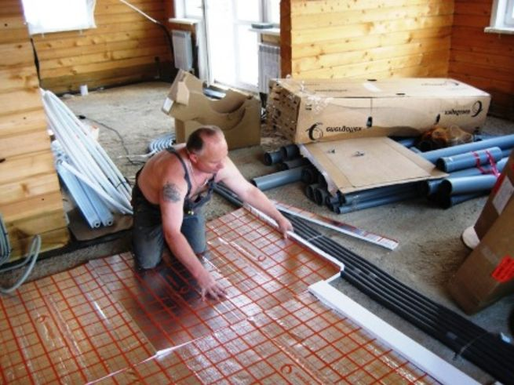
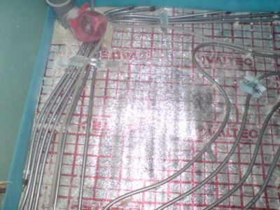
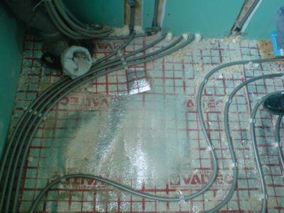
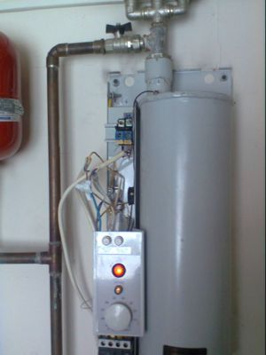

Качественный электромонтаж, Стаж 12 лет. Частный электрик, недорого.
Тел. 8 904 642 08 57. Николай.

Водяной пол цена за м2.
Два мастера сантехник и электрик.

Водяной теплый пол сегодня – это одна из самых популярных инженерных отопительных сетей, отличающаяся различными эксплуатационными и техническими достоинствами, тем более в сравнении с обычными радиаторными схемами подачи тепла, которые требуют значительных дополнительных расходов и внимания к обслуживанию, а эффективность их использования намного ниже.
Заказ теплого пола у специалистов.
Заказывая ремонт, продумайте, как изменится в лучшую сторону жизнь вашей семьи после установки водяного теплого пола. Естественно, можно смонтировать такой пол и самостоятельно, но если вы не специалист в этом деле, то лучше всего заказать систему и ее монтаж в специализированной фирме. Если вы уже определились с выбором бригады, выполняющей необходимые работы по строительству, в том числе и монтаж инженерных сетей, обратите внимание на предложения по сотрудничеству от фирмы, которая будет заниматься монтажом.
Эти предложения должны быть такими:
- Проектирование сети водяного пола для всех помещений.
- Доставка нужных для полной комплектации материалов.
- Должен выполняться технадзор над выполнением всех рабочих процессов.
- Должен осуществляться контроль за правильным выполнением соединений.
- Должен быть осуществлен запуск в работу системы и проверка ее работоспособности.
Водяной пол зарекомендовала себя как надежный и результативный источник тепла на дачах, в загородных домах, бытовых и административных помещениях, на открытых площадках, при подогреве стадионных полей и других объектах. Причем используется она уже достаточно давно для того, чтобы были учтены все слабые места системы и определены самые оптимальные материалы для ее изготовления.
Сколько стоит устройство водяного тёплого пола?
Мы выполняем необходимые расчеты, и предоставим заказчику окончательную смету по заказу, при этом учтем все дополнительные расходы.
Площадь теплого пола в кв. м. |
Цена за 1 кв. м. |
До 8 кв. м. |
От 1500 руб. |
15 |
1200 |
25 |
1000 |
35 |
800 |
50 |
700 |
70 |
650 |
От 70 кв. м. |
От 500 руб. |
Особенности устройства и монтажа.
Монтируется такой пол в помещении под напольным покрытием.
Она существенно отличается от стандартных вентиляторов и схемы радиаторного отопления. Состоит водяной пол из труб, которые специальным способом укладывают под верхним слоем пола.
|  |  |
Сейчас на отечественном рынке можно найти разнообразные пластиковые и металлопластиковые трубы, которые можно использовать для создания теплого пола. Используют проверенную продукцию, которая отличается эластичностью, надежно защищена от кислородной диффузии и характеризуется высокой коррозионной устойчивостью, а также не склонна к зарастанию изнутри плесенью и образованию всяких отложений. Молекулярный состав изделий таков, что даже при изломах они способны восстановить свою изначальную форму.
Как устроен тёплый водяной пол.
По внутреннему диаметру трубы разжимают специальной насадкой, а затем насаживают на фитинг, они через короткий период приобретают первоначальный вид, при этом патрубок фитинга зажимается, а соединение становится полностью водонепроницаемым. Эксплуатируются комплектующие более 50 лет. Они абсолютно гигиеничны - в их составе отсутствуют токсические вещества, и они не повреждаются под воздействием воды и высокой температуры.

Продуманная технология сети теплый пол водяного типа позволяет равномерно прогревать пространство помещения и всего здания. Именно поэтому системы приобрели большую популярность у владельцев частных домов и загородных особняков, которые отличаются большой площадью. При применении обычных радиаторов, теплый воздух очень быстро поднимается, в результате все тепло скапливается под потолком, а внизу лишь незначительно прогревается воздух. В случае водяного пола наблюдается совсем иная картина.
Хотя отличные характеристики сети только вышеперечисленными качествами не ограничиваются. Конструкция не производит конвекционных потоков, а поэтому пыль не циркулирует по всему пространству. Теплообменные процессы достигаются с помощью «пассивного излучения тепла». Этот способ характеризуется отсутствием аккумуляции и циркуляции пыли, которая постоянно образуется при работе конвекторов и радиаторов. Именно эти качества делают водяной пол востребованным в медицинских учреждениях, лабораториях, на специализированных объектах, которые отличают высокие требования к гигиеническим особенностям.
Что входит в схему.
Система такого пола состоит из труб, находящихся под стяжкой.
Размер расстояния, через которое укладывают трубы, обозначается проектной документацией, но не может быть больше 30 см. Рабочая жидкость, попадая в сеть замкнутого контура, передает тепло слою бетонной стяжки, а она, в свою очередь, обеспечивает равномерное распределение тепла по периметру помещения. Если же был выбран способ монтажа без выполнения бетонной стяжки, то трубы отопления располагаются внутри каркаса, собранного из деревянных лаг, а все пустое пространство заполняется минеральной ватой или пенополистиролом. Сверху можно укладывать совершенно любое напольное покрытие – деревянные доски, паркет, ламинат, линолеум.
Вся напольная поверхность начинает отапливать комнату, при этом бесшумно функционирует и не образовывает пыль. В пользу схемы отопления водяной пол говорит и тот факт, что мебель можно ставить где угодно, не беспокоясь о том, что она будет мешать отоплению. Это весьма кардинально отличает водяную систему от электрической, над нагревательными элементами которой тяжелую мебель ставить не рекомендуется.
С чего начинается заказ установки системы.
Для того чтобы узнать стоимость полной организации строительных работ, клиент всегда может предварительно проконсультироваться с профессиональным менеджером выбранной для производства работ фирмы.
Водяной пол характеризуется ценой, в которой собраны и приняты во внимание все возможные нюансы. Заказчик всегда может выяснить все вопросы в телефонном режиме, а также оставить электронную заявку. Менеджеры разберут обращение, а затем свяжутся по контактным телефонам с клиентом и договорятся об удобном для него времени выезда замерщика. Работники фирмы обязаны предоставить комплексные услуги по всей организации схемы «водяной теплый пол».


Сделать электрику в квартире.
Расценки на электропроводку квартир.
Провести электропроводку в новостройке.
Электромонтаж в частном доме.
Электрика в загородном доме.
Сколько стоит замена электропроводки в двухкомнатной квартире?.
Сколько стоит проводка в 3 ком квартире?
Сколько стоит проложить проводку в четырех комнатной квартире?
Сколько стоит сделать внутреннюю проводку?
Стоимость штробление стен.
Электромонтаж двухкомнатной квартиры.
Замена электропроводки в панельном доме.
Электромонтаж проводов в бане.